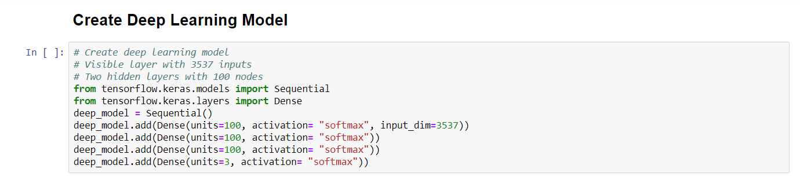
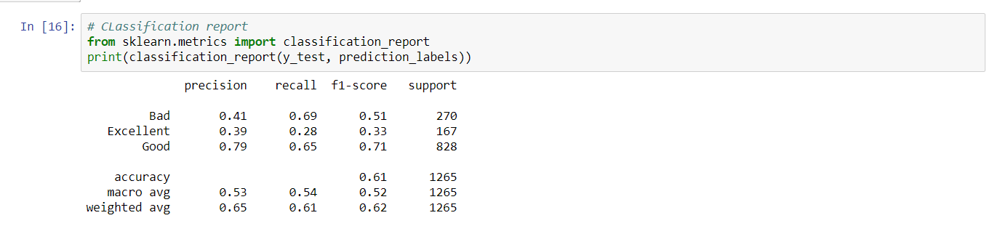
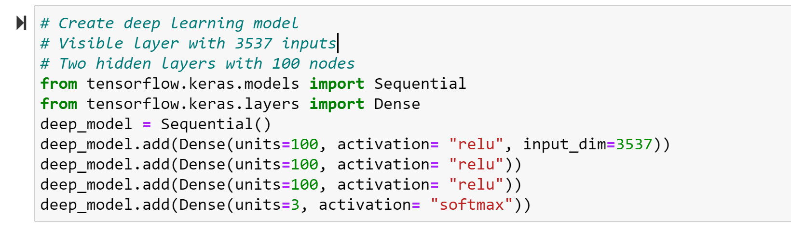
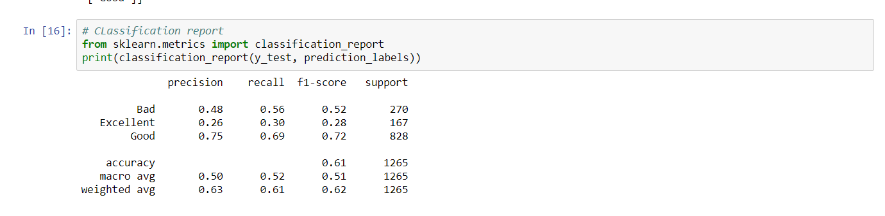
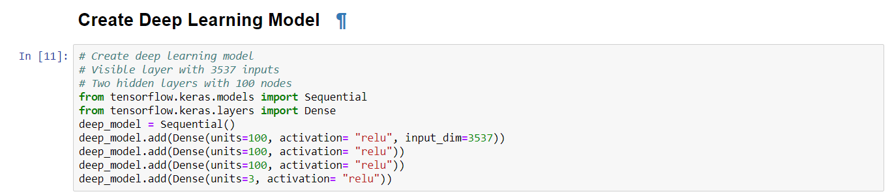
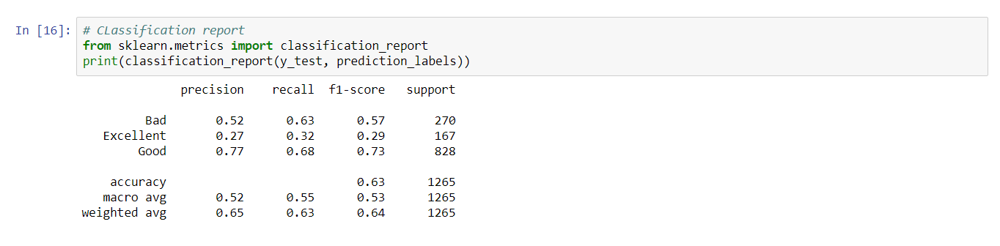

Deep Learning Findings
What is deep learning or deep structured learning?
Deep Learning or deep structured learning s part of a broader family of machine learning methods based on artificial neural networks with representation learning. Learning can be supervised, semi-supervised or unsupervised.
Put simply, deep learning is a subset of machine learning which teaches machines to do what humans are naturally born with: learn by example. Though the technology is often considered a set of algorithms which ‘mimics the brain’, a more appropriate description would be a set of algorithms which ‘learns in layers’. It involves learning through layers that enable a computer to develop a hierarchy of complicated concepts from simpler concepts

Majority of the deep learning methods utilize neural network architectures and that’s why deep learning models are widely known as deep neural networks as well. A deep learning process consists of two key phases — training and inferring. The training phase can be considered as a process of labeling huge amounts of data and identifying their matching characteristics. Here, the system compares those characteristics and memorizes them to come up with correct conclusions when it encounters similar data next time. During the inferring phase, the model makes conclusions and labels unexposed data with the help of the knowledge it gained previously.
Our Deep Learning Model
For our deep learning model we used get_dummies to encode our categorical data (genre and director). We created the test train split (default 75/25) and scaled our data using the standard scaler. Lastly we used to_categorical to encode our target (rating class). Our model included 2 hidden layers with 100 nodes each. The accuracy on this model was 65%.






Advantages of Deep Learning
One of deep learning’s main advantages over other machine learning algorithms is its capacity to execute feature engineering on it own. A deep learning algorithm will scan the data to search for features that correlate and combine them to enable faster learning without being explicitly told to do so. Deep learning algorithms can be trained using different data formats, and still derive insights that are relevant to the purpose of its training. For example, a deep learning algorithm can uncover any existing relations between pictures, social media chatter, industry analysis, weather forecast and more to predict future stock prices of a given company.